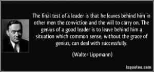

< < < Back
The Essence Of True Leadership – Return Of Kings
People ask the difference between a leader and a boss. The leader leads, and the boss drives. – Theodore Roosevelt
A lot of red pill men today face frustratingly tough situations when it comes to their social, private, and more so professional lives – especially when women are gradually taking over the job market, and dominate workplaces, apart from the social scene.
To compound this problem, what is often seen are men who are either posturing betas, white knights, or manginas in positions of power in societies and more so at the workplace, who further promote modern feminist ideologies at offices (or even blue collar industries) by psychologically emasculating the male staff with their own warped interpretation of leadership. The fate is often worse for those working under a feminist female boss.
A lot of men today blindly follow leaders (sometimes in the quest of a role model) because we live in feminist societies where men are increasingly indoctrinated to follow the herd mentality. But in today’s times of convoluted masculinity, the best option remains the same: to lead than to follow. Thus it becomes imperative to understand the essence of true leadership to begin with.
The virtues of leadership
The topic of leadership is indeed vast; it can be expounded upon at length. But some essential core values of leadership remain unchanged for becoming a good leader (references to certain laws from Robert Greene’s The 48 laws Of Power are used to elaborate them below). They are as follows (and not necessarily in that order):
1. Judgement
One essential quality of a good leader is the power of proper discernment. A leader with poor judging skills will eventually make mistakes and errors not only leading to his own downfall, but that of his followers as well. His poor judgement makes him a victim of his own favoritism, often choosing sycophants or undeserving allies – which often contributes to the alienation and loss of valuable followers and aides, leading to his failure.
On the flip side, the good leader is the one who values meritocracy and loyalty in the selection of his followers, and his subsequent treatment of them. He critically examines the problems he is faced with; and also the motives and value of his followers, and the necessities of the environment he finds himself in. He doesn’t led favoritism blind him – rather he knows what should be done, how it should be done, and whom to appropriately delegate responsibility and tasks to.

2. Responsibility
Leadership – leadership is about taking responsibility, not making excuses. – Mitt Romney
Leadership is all about taking responsibility – not only for self, but also for the entire tribe. The ability of a leader to assume responsibility for consequences – either for good or bad – is what inspires confidence and loyalty towards him in those around him.
3. Trustworthiness
The leader who isn’t loyal to his followers or to the ideologies he expounds isn’t going to inspire loyalty from others in the long run, for his hypocrisy itself will turn even the best of those who might have his best interests in their hearts. Trust indeed is like paper; once it’s crumpled, it can’t be perfect again. The good leader understands this, and thus safeguards his credibility ferociously by avoiding hypocrisy and false promises, by wisely choosing his words – free of brevity.
ALWAYS SAY LESS THAN NECESSARY
When you are trying to impress people with words, the more you say, the more common you appear; and the less in control. Even if you are saying something banal, it will seem original if you make it vague, open-ended, and sphinx like. Powerful people impress and intimidate by saying less. The more you say, the more likely you are to say something foolish. – Law 4
4. Reputability
SO MUCH DEPENDS ON REPUTATION-GUARD IT WITH YOUR LIFE
Reputation is the cornerstone of power. Through reputation alone you can intimidate and win; once it slips, however; you are vulnerable, and will be attacked on all sides. Make your reputation unassailable. Always be alert to potential attacks and thwart them before they happen. Meanwhile, learn to destroy your enemies by opening holes in their own reputations. Then stand aside and let public opinion hang them. – Law 5
No one likes to follow a “leader” with an ambiguous reputation. The real reason why people look upto leaders is partly because of humanity’s predilection of man worship, and partly because of a leader’s reputation, which precedes and follows him wherever he goes. In today’s times with the rise of degeneracy, it’s often seen that “leaders” today have lower reputations than that of their “disciples” – something which leaders of the past wouldn’t even think of having of.
5. Fear
A good leader understands the power of fear, and harnesses it effectively to mold and direct his followers (and his adversaries) into the direction of his goal. He doesn’t abuse the power of fear, for he realizes that this abuse could very well breed resentment, discontent or worse, chronic rebellion or opposition to his plans from both friends and foes.
On the flip side, when the situation demands stern measures, he doesn’t vacillate in exacting retribution swiftly. No leader was ever taken seriously who failed to do so, for such failure resulted in loss of respect, confidence and morale of his followers. No one likes to be led by a sheep; for every one wants to be led by a lion.
6. Love
WORK ON THE HEARTS AND MINDS OF OTHERS
Coercion creates a reaction that will eventually work against you. You must seduce others into wanting to
move in your direction. A person you have seduced becomes your loyal pawn. And the way to seduce others is to operate on their individual psychologies and weaknesses. Soften up the resistant by working on their emotions, playing on what they hold dear and what they feel: Ignore the hearts and mind of others and they will grow to hate you. – Law 43
Just like fear, the power of love has a great influence on human behavior. The wise leader knows how to work on the hearts of the members of his tribe (through his behavior and deeds), for he knows when fear would fail in securing him the loyalty of his supporters, it would be their love for him that would turn the tide in his favor.
7. Self reliance
In a modern world where mutual dependency is often peddled to people, self reliance often helps the leader to rise above from the rest of the herd. His self-sufficiency is what makes others seek him out, for he becomes the pillar others lean onto, the one whom others seek to emulate.
8. Courage and the will to act
No one wants to follow a coward, and more so a non-doer. A good leader inspires others with his courage, and by his deeds – his deeds speak louder than his words. Besides, he knows the difference between raw courage and plain recklessness through his heightened social intelligence.
9. Forbearance
Leadership without forbearance has the danger to degenerate into tyranny. Since the empowerment of the tribe is one of the important aims of true leadership, a leader cannot inspire loyalty unless he embodies mercy when situations demand it. Love remains one of the greatest influencing factors of human behavior, and one effective way to secure it is through the apt use of forbearance.
10. Vision and foresight
The very essence of leadership is that you have to have a vision. It’s got to be a vision you articulate clearly and forcefully on every occasion. You can’t blow an uncertain trumpet. — Reverend Theodore Hesburgh
In today’s blue pill societies, it’s common to see self-styled “leaders” leading people with short-sighted plans and goals which accomplish nothing much in the end. But the defining quality of a real leader – which separates him from the herd – is his ability to perceive things differently, his conviction to create a reality based on that vision, and his ability to project himself into the future regardless of the times he might be presently in.
12. Dignity
BE ROYAL IN YOUR OWN FASHION: ACT LIKE A KING TO BE TREATED LIKE ONE
The way you carry yourself will often determine how you are treated: In the long run, appearing vulgar or common will make people disrespect you. For a king respects himself and inspires the same sentiment in others. By acting regally and confident of your powers, you make yourself seem destined to wear a crown. – Law 34
A leader with no dignity will inspire the same degeneracy among his followers. It’s common to see power thrust upon the shoulders of effeminate betas today who lack dignity yet pose as pseudo-leaders, setting horrendous examples of convoluted masculinity to other blue pill men in modern societies today.
It’s often said that familiarity breeds contempt in the long run. Not only does this affect commoners, but leaders as well.
USE ABSENCE TO INCREASE RESPECT AND HONOR
Too much circulation makes the price go down: The more you are seen and heard, the more common you
appear: If you are already established in a group, temporary withdrawal from it will make you more talked about, even more admired. You must learn when to leave. Create value through scarcity. – Law 16
13. Accessibility
At the same time, a leader who is cut off from his tribe would neither be aware of his environment, nor would he be able to inspire confidence and loyalty from his followers due to his isolation, thus putting himself at risk in the future.
DO NOT BUILD FORTRESSES TO PROTECT YOURSELF-ISOLATION IS DANGEROUS
The world is dangerous and enemies are everywhere-everyone has to protect themselves. A fortress seems the safest. But isolation exposes you to more dangers than it protects you from-it cuts you off from valuable information, it makes you conspicuous and an easy target. Better to circulate among people,find allies, mingle. You are shielded from your enemies by the crowd. – Law 18
Another common mistake of leaders is to rely completely on subordinates to deal with the masses. This often results in the unnecessary transfer of power to these subordinates dealing with the masses, for they would then be having the power to influence others, either for good or the worse. The wise leader however keeps channels open between him and his followers.
14. Originality

The leader is the pioneering trailblazer, while others follow him. He sees what others cannot, and he fearlessly plunges into carving his own unique path, for others to follow.
15. Planning
PLAN ALL THE WAY TO THE END
The ending is everything. Plan all the way to it, taking into account all the possible consequences, obstacles,and twists of fortune that might reverse your hard work and give the glory to others. By planning to the end you will not be overwhelmed by circumstances and you will know when to stop. Gently guide fortune and help determine the future by thinking far ahead. – Law 29
It’s often said that “failing to plan is planning to fail,” or “better to have a bad plan than no plan at all.” One of the abilities of a leader is to transform his vision into reality, and to do that he must have a plan (or several plans to deal with the eventualities he might face on the path to success).
No one likes to be led by someone without a plan. Unfortunately with the lack of vision in today’s blue pill world, it’s common to see people led by those who themselves are drifting aimlessly without a vision.
16. Adaptability
ASSUME FORMLESSNESS
By taking a shape, by having a visible plan, you open yourself to attack. Instead of taking a form for your
enemy to grasp, keep yourself adaptable and on the move. Accept the fact that nothing is certain and no law is fixed. The best way to protect yourself is to be as fluid and formless as water; never bet on stability or lasting order. Everything changes. – Law 48
One of the certainties of life is that of change. A leader who fails to adapt himself to changing times puts not only himself at risk, but also his followers. Part of this failure could also be attributed particularly to a lack of planning, judgement, and foresight on his part. Nevertheless, adaptability to changing circumstances is crucial for good leadership.
17. Humility
Even the best of leaders have lost it all due to megalomania. Pride which comes with power and achievement (not to be confused with self respect) can destroy entire civilizations. Wise leaders have thus sought to control it, by practicing a healthy dose of humility for obvious reasons.
18. Competence
Management is doing things right; leadership is doing the right things. – Peter Drucker
The leader separates himself from the rest also because of his skill. He doesn’t moan and complain unnecessarily; he acts and solves the issues he faces boldly. It’s common to see modern men however find themselves led by incompetent “leaders” – in society and their professional lives – who don’t have any skill nor expertise.This lack of competence is another reason for the lack of faith in modern leadership.
Yet, what we often see today is “leaders” defensively arguing their way out of the cynosure on their shortcomings, shirking responsibility – further adding to the lack of belief in their leadership.
WIN THROUGH YOUR ACTIONS, NEVER THROUGH ARGUMENT
Any momentary triumph you think you have gained through argument is really a Pyrrhic victory: The resentment and ill will you stir up is stronger and lasts longer than any momentary change of opinion. It is much more powerful to get others to agree with you through your actions, without saying a word. Demonstrate, do not explicate. – Law 9
19. Self control
In a modern world today which stresses more upon excess in everything, one of the defining qualities of the leader is that he not only knows when to act, but more so when to stop.
DO NOT GO PAST THE MARK YOU AIMED FOR; IN VICTORY, LEARN WHEN TO STOP
The moment of victory is often the moment of greatest peril. In the heat of victory, arrogance and overconfidence can push you past the goal you had aimed fol; and by going too far, you make more enemies than you defeat. Do not allow success to go to your head. There is no substitute for strategy and careful planning. Set a goal, and when you reach it, stop. – Law 47
It’s easy to get lost in the trap of sensory and worldly gratification, as Napoleon Hill illustrates with the example of sensual excess in his best seller Think and Grow Rich; but the true leader understands the dangers of this, and rises above others with his self regulation and ability to put things in perspective.
20. Quality
The quality of a leader is reflected in the standards they set for themselves. – Ray Kroc
What makes a leader truly stand out? It’s the qualities and standards he embodies, which sets him apart from the rest. Being average has gotten no one anywhere, and more so a leader. Would you follow someone who is average? This is why self-development becomes very important for men on their journey on the path of leadership.
21. Gratitude
One of the most effective ways to inspire goodwill in others is the attitude of gratitude – and good leaders have always known it, and more importantly, when to practice it. There is a marked difference in the attitude of the followers of the leader who considers them as those under him, and in that of the followers of the leader who considers them as those working for him.
In the end where results matter, the leader is as good as his team, and the team is as good as its leader. Failure on the part of leaders to show gratitude to their followers has often resulted in the premature downfall of many promising personalities who could’ve risen to greater heights had they understood and practiced this seemingly innocuous virtue.
22. Belief

The leader has conviction in his own beliefs which serves as the dynamo for his focus and drive, and he also projects his beliefs effectively to influence the belief patterns of the tribe. It’s this ability to influence mankind’s beliefs is what grants him the power to lead, even in his absence.
Not only does he firmly believe in himself, he also empowers the people around him through the power of faith.
Outstanding leaders go out of their way to boost the self-esteem of their personnel. If people believe in themselves, it’s amazing what they can accomplish. – Sam Walton
Conclusion
In today’s feminist societies, it’s undeniably common to see the loss (or even absence) of these essential qualities which constitute the essence of true leadership in modern men. It’s no surprise then to see the essence of true male leadership take a beating to undergo gradual erosion today.
The solution remains unchanged: to take the red pill, and either eject to a social and workplace environment where masculinity is still valued and practiced effectively, or create your own tribe like a leader.
In modern times where masculinity remains a confusing minefield to step into for the modern man, we need real leaders who would embody the true essence of leadership in deed and word, to protect these values from further decline in cultures which promote the death of male authenticity more than ever before.
Read Next: 9 Elements Of Your Quest For Self Mastery


{kind=link}
{kind=link}
{kind=link}
{kind=link}
{kind=link}
{kind=link}
{kind=link}
{kind=link}
{kind=link}
{kind=link}
{kind=link}
{kind=link}